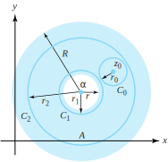

Suppose that \(f(z)\) is not analytic in \(D_{R}(\alpha)\) but is analytic in the punctured disk \(D_{R}^*(\alpha) = \{z:0\lt |z-\alpha|\lt R\}\text{.}\) For example, the function \(f(z) =\frac{1}{z^3} e^z\) is not analytic when \(z=0\) but is analytic for \(|z| >0\text{.}\) Clearly, this function does not have a Maclaurin series representation. If we use the Maclaurin series for \(g(z) =e^z\) , however, and formally divide each term in that series by \(z^3\text{,}\) we obtain the representation
Perhaps we can represent these functions with a series that involves negative powers of \(z\) in some way as we did with \(f(z) =\frac{1 }{z^3}e^z\text{.}\) As you will see shortly, we can indeed. We begin by defining a series that allows for negative powers of \(z\text{.}\)
Definition7.3.1.Laurent Series.
Let \(c_n\) be a complex number for \(n=0,\,\pm 1,\,\pm 2,\,\pm 3,\ldots\) The doubly infinite series \(\sum\limits_{n=- \infty}^{\infty}c_n(z-\alpha)^n\text{,}\) called a Laurent series, is defined by
provided the series on the right-hand side of this equation converge.
Remark7.3.2.
Recall that \(\sum\limits_{n=0}^{\infty}c_n(z-\alpha)^n\) is a simplified expression for the sum \(c_0+\sum\limits_{n=1}^{\infty}c_n (z-\alpha)^n\text{.}\) At times it will be convenient to write \(\sum\limits_{n=- \infty}^{\infty}c_n(z-\alpha)^n\) as \(\sum\limits_{n=- \infty}^{\infty}c_n(z-\alpha)^n = \sum\limits_{n=- \infty}^{-1}c_n(z-\alpha)^n + \sum \limits_{n=0}^{\infty}c_n(z-\alpha)^n\) rather than using the expression given in Equation (7.3.1).
Definition7.3.3.Annulus.
Given \(0 \le r\lt R\text{,}\) we define the annulus centered at \(\alpha\) with radii \(r\) and \(R\) by
Figure7.3.4.The open annulus \(A(\alpha,r,R)\) (shaded)
Theorem7.3.5.
Suppose that the Laurent series \(\sum\limits_{n=- \infty}^{\infty}c_n(z-\alpha)^n\) converges on the annulus \(A(\alpha,r,R)\text{.}\) Then the series converges uniformly on any closed subannulus \(\overline{A}(\alpha,s,t)\text{,}\) where \(r\lt s\lt t\lt R\text{.}\)
By Theorem 7.1.5, the series \(\sum\limits_{n=0}^{\infty}c_n(z-\alpha)^n\) must converge uniformly on the closed disk \(\overline{D}_{t}(\alpha)\text{.}\) By the Weierstrass \(M\)-test, we can show that the series \(\sum\limits_{n=1}^{\infty}c_{-n}(z-\alpha)^{-n}\) converges uniformly on \(\{z:|z-\alpha| \ge s\}\) (we leave the details as an exercise). Combining these two facts yields the required result.
The main result of this section specifies how functions analytic in an annulus can be expanded in a Laurent series. In it, we use symbols of the form \(C_{\rho}^{+}(\alpha)\text{,}\) which—we remind you—designate the positively oriented circle with radius \(\rho\) and center \(\alpha\text{.}\) That is, \(C_{\rho}^{+}(\alpha) = \{z:|z-\alpha|=\rho\}\text{,}\) oriented counterclockwise.
Theorem7.3.6.Laurent’s theorem.
Suppose that \(0 \le r\lt R\text{,}\) and that \(f\) is analytic in the annulus \(A=A(\alpha,r,R)\text{.}\) If \(\rho\) is any number such that \(r \lt \rho \lt R\text{,}\) then for all \(z_0 \in A \, f\) has the Laurent series representation
Moreover, the convergence in Equation (7.3.2) is uniform on any closed subannulus \(\overline{A}(\alpha ,s,t)\text{,}\) where \(r\lt s\lt t\lt R\text{.}\)
Proof.
If we can establish Equation (7.3.2), the uniform convergence on \(\overline{A}(\alpha ,s,t)\) will follow from Theorem 7.3.5. Let \(z_0\) be an arbitrary point of \(A\text{.}\) Choose \(r_0\) small enough so that the circle \(C_0=C_{r_0}^{+}(z_0)\) is contained in \(A\text{.}\) Since \(f\) is analytic in \(D_{r_0}(z_0)\text{,}\) the Cauchy integral formula gives
Let \(C_1=C_{r_1}^{+}(\alpha)\) and \(C_2=C_{r_2}^{+}(\alpha)\text{,}\) where we choose \(r_1\) and \(r_2\) so that \(C_0\) lies in the region between \(C_1\) and \(C_2\text{,}\) and \(r\lt r_1\lt r_2\lt R\) as shown in Figure 7.3.7, where the annulus \(A\) is the shaded region.

Figure7.3.7.The annulus \(A\) and, in its interior, the circles \(C_0\text{,}\)\(C_1\text{,}\) and \(C_2\)
Now let \(D\) be the domain consisting of the annulus \(A\) except for the point \(z_0\text{.}\) The domain \(D\) includes the contours \(C_0\text{,}\)\(C_1\text{,}\) and \(C_2\text{,}\) as well as the region between \(C_2\) and \(C_0+C_1\text{.}\) In addition, since \(z_0\) does not belong to \(D\text{,}\) the function \(\frac{f(z)}{z-z_0}\) is analytic on \(D\text{,}\) so by the extended Cauchy-Goursat theorem we obtain
Now, if \(z \in C_1\text{,}\) then \(|z-\alpha| \lt |z_0 - \alpha|\text{,}\) so \(\left|\frac{z-\alpha}{z_0-\alpha}\right| \lt 1\) and we can use the geometric series (Theorem 4.3.1) to get
Moreover, one can show by using the Weierstrass M-test that the preceding series converges uniformly for \(z \in C_1\text{.}\) We leave the details as an exercise. Likewise, using techniques similar to the ones just discussed, one can show that, for \(z \in C_2\text{,}\)
and that the convergence is uniform for \(z \in C_2\text{.}\) Again, we leave the details as an exercise.
Taking the series for \(\frac{1}{z-z_0}\) as given by Equations (7.3.7) and (7.3.8) and substituting into the two integrals, respectively, of Equation (7.3.6) yields
Because the series in this equation converge uniformly on \(C_2\) and \(C_1\) , respectively, we can interchange the summations and the integrals, in accordance with Corollary 7.1.8 to obtain
We apply the extended Cauchy-Goursat theorem once more to conclude that the integrals taken over \(C_2\) and \(C_1\) in Equation (7.3.9) give the same result if they are taken over the contour \(C_{\rho }^{+}(\alpha)\text{,}\) where \(\rho\) is any number such that \(r\lt \rho \lt R\text{.}\) This yields
Because \(z_0 \in A\) was arbitrary, this result establishes Equations (7.3.2) and (7.3.3), completing the proof.
What happens to the Laurent series if \(f\) is analytic in the disk \(D_{R}(\alpha)\text{?}\) Looking at Equation (7.3.9), we see that the coefficient for the positive power \((z_0-\alpha)^n\) equals \(\frac {f\,^{(n)}(z_0)}{n!}\) by using Cauchy ’s integral formula for derivatives. Hence the series\- in Equation (7.3.2) involving the positive powers of \((z_0-\alpha)\) is actually the Taylor series for \(f\text{.}\) The Cauchy-Goursat theorem shows that the coefficients for the negative powers of \((z_0-\alpha)\) equal zero. In this case, therefore, there are no negative powers involved, and the Laurent series reduces to the Taylor series.
Theorem 7.3.8 delineates two important properties of the Laurent series.
Theorem7.3.8.Properties of Laurent Series.
Suppose that \(f\) is analytic in the annulus \(A(\alpha,r,R)\) and has the Laurent series \(f(z)=\sum\limits_{n= -\infty}^{\infty}c_n(z-\alpha)^n\text{,}\) for all \(z \in A(\alpha,r,R)\text{.}\)
i.
If \(f(z) =\sum\limits_{n=- \infty}^{\infty}b_n(z-\alpha)^n\) for all \(z \in A(\alpha,r,R)\text{,}\) then \(b_n=c_n\) for all \(n\text{.}\) (In other words, the Laurent series for \(f\) in a given annulus is unique.)
ii.
For all \(z \in A(\alpha,r,R)\text{,}\) the derivatives of \(f(z)\) may be obtained by termwise differentiation of its Laurent series.
Proof.
We prove part (i) only because the proof for part (ii) involves no new ideas beyond those in the proof of Theorem 4.4.7. The series \(\sum\limits_{n=- \infty}^{\infty}b_n(z-\alpha)^n\) converges pointwise on \(A(\alpha,r,R)\text{,}\) so Theorem 7.3.5 guarantees that this series converges uniformly on \(C_{\rho}^{+}(\alpha)\text{,}\) for \(0 \le r\lt \rho\lt R\text{.}\) By Laurent’s theorem, then,
Since \((z-\alpha)^{m-n-1}\) has an antiderivative for all \(z\) except when \(m=n\text{,}\) all the terms in the preceding expression drop out except when \(m=n\text{,}\) giving
The uniqueness of the Laurent series is an important property because the coefficients in the Laurent expansion of a function are seldom found by using Equation (7.3.3). The following examples illustrate some methods for finding Laurent series coefficients.
Example7.3.9.
Find three different Laurent series representations for \(f(z) =\frac{3}{2+z-z^2 }\) involving powers of \(z\text{.}\)
Solution.
The function \(f\) has singularities at \(z=-1,2\) and is analytic in the disk \(D:|z| \lt 1\text{,}\) in the annulus \(A:1\lt |z| \lt 2\text{,}\) and in the region \(R:|z| >2\text{.}\) We want to find a different Laurent series for \(f\) in each of the three domains \(D\text{,}\)\(A\text{,}\) and \(R\text{.}\) We start by writing \(f\) in its partial fraction form:
which is a Laurent series that reduces to a Maclaurin series. In the annulus \(A\text{,}\)Representations (7.3.12) and (7.3.13) are valid; hence we get
We formally divide each term by \(z^4\) to obtain the Laurent series
\begin{equation*}
f(z) =\frac{-1}{2z^2}+\frac{1}{24}-\frac{z^2}{720}+\cdots, \text{ valid for } z \ne 0\text{.}
\end{equation*}
Example7.3.11.
Find the Laurent series for \(\exp\left(-\frac{1}{z^2}\right)\) centered at \(z_0=0\text{.}\)
Solution.
The Maclaurin series for \(\exp z\) is \(\exp z=\sum\limits_{n=0}^{\infty} \frac{z^n}{n!}\text{,}\) which is valid for all \(z\text{.}\) We let \(-z^{-2}\) take the role of \(z\) in this equation to get
Find two Laurent series expansions for \(f(z) =\frac{1}{z^3-z^4}\) that involve powers of \(z\text{.}\)
Solution.
\(\frac{1}{z^3-z^4}=\sum\limits_{n=0}^{\infty}z^{n-3}\) for \(0\lt |z|\lt 1, \, \frac{1}{z^3-z^4} = -\sum\limits_{n=1}^{\infty}\frac{1}{z^{n+3}}\) for \(|z| > 1\text{.}\)
2.
Show that \(f(z) = \frac{1}{1-z}=\frac{1}{1-i}\left(\frac{1}{1-\frac{z-i}{1-i}}\right)\) has a Laurent series representation about the point \(z_0=i\) given by
\begin{equation*}
f(z) =\frac{1}{1-z}=-\sum\limits_{n=1}^{\infty}\frac{(1-i)^{n-1}}{(z-i)^n}, \text{ valid for } |z-i| >\sqrt{2}
\end{equation*}
3.
Find the Laurent series for \(f(z) =\frac{\sin 2z}{z^4}\) that involves powers of \(z\text{.}\)
Solution.
\(\sum\limits_{n=0}^{\infty}\frac{(-1)^n 2^{2n+1}z^{2n-3}}{(2n+1)!}\) for \(|z|>0\text{.}\)
4.
Show that \(\frac{1-z}{z-2}=-\sum\limits_{n=0}^{\infty}\frac{1}{(z-1)^n}\) is valid for \(|z-1| >1\text{.}\)
\hint{Refer to the solution for Exercise 3a, Section 7.2.} \label {7.3.4}
5.
Find the Laurent series for \(\sin (\frac{1}{z})\) centered at \(\alpha =0\text{.}\) Where is the series valid?
Solution.
\(\sum\limits_{n=0}^{\infty}\frac{(-1)^n}{(2n+1)!z^{2n+1}}\) valid for \(|z|>0\text{.}\)
6.
Show that \(\frac{1-z}{z-3}=-\sum\limits_{n=0}^{\infty}\frac{2^n}{(z-1)^n}\) is valid for \(|z-1|>2\text{.}\)
Find the Laurent series for \(f(z) =\frac{\cosh z-\cos z}{z^5}\) that involves powers of \(z\text{.}\)
Solution.
\(\sum\limits_{n=1}^{\infty}\frac{2z^{4n-7}}{(4n-2)!}\) valid for \(|z|>0\text{.}\)
8.
Find the Laurent series for \(f(z) =\frac{1}{z^4(1-z)^2}\) that involves powers of \(z\) and is valid for \(|z| >1\text{.}\) \hint{\(\frac{1}{\left(1-\frac{1}{z}\right)^2}=\frac{z^2}{(1-z)^2}\text{.}\)}
9.
Find two Laurent series for \(z^{-1}(4-z)^{-2}\) involving powers of \(z\text{,}\) and state where they are valid.
Solution.
\(z^{-1}(4-z)^{-2}=\frac{1}{16z} + \sum\limits_{n=0}^{\infty}\frac{(n+2) z^n}{4^{n+3}}\) for \(|z|\lt 4\text{,}\)
\(z^{-1}(4-z)^{-2} = \sum\limits_{n=1}^{\infty}\frac{n(4)^{n-1}}{z^{n+2}}\) for \(|z|>4\text{.}\)
10.
Find three Laurent series for \((z^2-5z+6)^{-1}\) centered at \(\alpha =0\text{.}\)
11.
Find the Laurent series for Log\((\frac{z-a}{z-b})\text{,}\) where \(a\) and \(b\) are positive real numbers with \(b>a>1\text{,}\) and state where the series is valid. \hint{For these conditions, show that \(\mathrm{Log}(\frac{z-a}{z-b}) = \mathrm{Log}(1-\frac{a}{z}) - \mathrm{Log}(1- \frac{b}{z})\text{.}\)}
Solution.
Log\((\frac{z-z}{z-b}) = \sum\limits_{n=1}^{\infty}\frac{b^n-a^n}{nz^n}\) valid for \(|z|>b\text{.}\) Explain.
12.
Can \(\mathrm{Log}\,z\) be represented by a Maclaurin series or a Laurent series about the point \(\alpha =0\text{?}\) Explain your answer.
13.
Use the Maclaurin series for \(\sin z\) and then long division to get the Laurent series for \(\csc z\) with \(\alpha=0\text{.}\)
Show that \(\cosh (z+\frac{1}{z}) =\sum\limits_{n=- \infty}^{\infty}a_nz^n\text{,}\) where the coefficients can be expressed in the form \(a_n=\frac{1}{2\pi} \int_0^{2\pi}\cos n\theta \cosh (2\cos \theta)\,d\theta\text{.}\) \hint{Let the path of integration be the circle \(C_1^{+}(0)\text{.}\)}
15.
Consider the real-valued function \(u(\theta)=\frac{1}{5-4\cos \theta}\text{.}\)
(a)
Use the substitution \(\cos \theta =\frac{1}{2}(z+\frac{1}{z})\) and obtain
Use the substitutions \(\cos (n\theta)=\frac{1}{2}(z^n+z^{-n})\) in part (b) and obtain the Fourier series for \(u(\theta)\text{,}\) where \(u(\theta) = \frac{1}{3}+\frac{1}{3} \sum\limits_{n=1}^{\infty}2^{-n+1}\cos(n\theta)\text{.}\)
16.
The Bessel function\(J_n(z)\) is sometimes defined by the generating function
Suppose that the Laurent expansion \(f(z) = \sum\limits_{n=- \infty}^{\infty}a_nz^n\) converges in the annulus \(A(0,r_1,r_2)\text{,}\) where \(r_1\lt 1\lt r_2\text{.}\) Consider the real-valued function \(u(\theta)=f(e^{i\theta})\) and show that \(u(\theta)\) has the Fourier series expansion
Since \(f(z) = \sum\limits_{n=-\infty }^{\infty}a_nz^n\) is valid for \(|z|=1\) (explain), letting \(z=e^{i\theta}\) gives \(f(e^{i\theta}) = \sum\limits_{n=-\infty}^{\infty}a_ne^{in\theta}\) immediately. By Laurent’s Theorem, \(a_n=\frac{1}{2\pi i}\int_{c_1^{+}(0)} \frac{f(z)}{z^{n+1}}\,dz\) for all integers \(n\) (explain). Parametrizing \(C_1^{+}(0)\) with \(z(\theta) = e^{i\phi}\) for \(0 \le \phi \le 2\pi\) gives the desired result. Show the details.
18.
(The Z-transform): Let \(\{a_n\}\) be a sequence of complex numbers satisfying the growth condition \(| a_n| \le MR^n\) for \(n=0,\,1,\ldots\) and for some fixed positive values \(M\) and \(R\text{.}\) Then the \(Z\)-transform of the sequence \(\{a_n\}\) is the function \(F(z)\) defined by \(Z(\{a_n\})=F(z) =\sum\limits_{n=0}^{\infty}a_nz^{-n}\text{.}\)
(a)
Prove that \(F(z)\) converges for \(|z| > R\text{.}\)
(b)
Find \(Z(\{a_n\})\) for \begin{enumerate}
(c)
\(a_n=2\text{.}\)
(d)
\(a_n=\frac{1}{n!}\text{.}\)
(e)
\(a_n=\frac{1}{n+1}\text{.}\)
(f)
\(a_n=1\text{,}\) when \(n\) is even, and \(a_n=0\) when \(n\) is odd.
19.
Prove that \(Z\big(\{a_{n+1}\}\big)=z\big[Z(\{a_n\})-a_0\big]\text{.}\) This relation is known as the shifting property for the \(Z\)-transform. \end{enumerate}
20.
Use the Weierstrass \(M\)-test to show that the series \(\sum\limits_{n=1}^{\infty}c_{-n}(z-\alpha)^{-n}\) of Theorem 7.3.5 converges uniformly on the set \(\{z:|z-\alpha| \ge s\}\) as claimed.
Solution.
Since \(\sum\limits_{n=1}^{\infty}c_{-n}(z-\alpha)^{-n}\) converges for \(|z-\alpha |>r\text{,}\) the ratio test guarantees that the series converges absolutely for \(\{z:|z-\alpha| \ge s\}\text{,}\) where \(s>r\) (show the details). Thus, if \(|z-\alpha|=s\text{,}\) the series \(\sum\limits_{n=1}^{\infty}|c_{-n}|s^{-n}\) converges. Since \(|c_{-n}(z-\alpha )^{-n}| \le |c_{-n}|s^{-n}\) for all \(|z| \ge s\text{,}\) the Weierstrass \(M\) test gives us our conclusion. Explain.
21.
Verify the following claims made in this section.
(a)
The series in Equation (7.3.7) converges uniformly for \(z \in C_2\text{.}\)